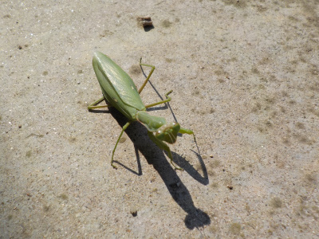
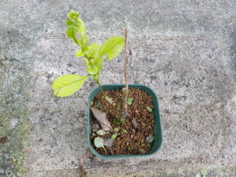
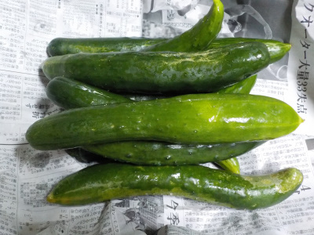
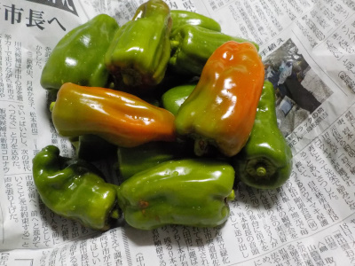
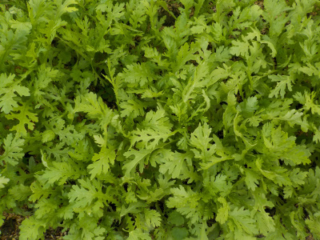

遊びで植物を育てよう
2021/10/31
後は卵を産むだけのカマキリかな。

お腹の大きいカマキリが歩いてました。
近くで卵を産んで、沢山育って欲しいですね。
【10月TOP】 【日記TOP】 【園芸TOP】
2021/10/31
何か違うものが生えたかな？

真ん中に植わっているものは葉っぱが無いので何かわかりません。枯れたのかな？
隅っこから何かの木が生えています。こっちは若葉で元気そうです。
同じ木のシュートが出たのかな？
【10月TOP】 【日記TOP】 【園芸TOP】
2021/10/23
キュウリ大量収獲。

今日はキュウリを沢山収穫しました。
ちょっと寒くなったので、生野菜はあまり食べたくないな。
でも生で食べるしかないな。暖房が欲しいな。
【10月TOP】 【日記TOP】 【園芸TOP】
2021/10/23
ピーマンはもう終わりかな。

ピーマンが大きくならないので収獲しないでいたら、赤くなりだしました。
もう成長しなさそうなので小さいですが収獲しました。
今年のピーマンはこれで終わりかな。
【10月TOP】 【日記TOP】 【園芸TOP】
2021/10/23
今年は暖かかったので春菊の葉っぱが大きい気がする。

なんとなく葉っぱの1枚1枚が大きい気がします。
でも過去の日記を見返したところ、特別そんなことはなさそう。
もう何年も温暖化で暖かいです。
温暖化による環境変化が心配ですが、選挙の話題はコロナや経済の話が多いですね。
【10月TOP】 【日記TOP】 【園芸TOP】
過去の日記
【2020年10月の日記】
【2019年10月の日記】
【2018年10月の日記】
【2017年10月の日記】
【2016年10月の日記】
【2015年10月の日記】
【2014年10月の日記】
【2013年10月の日記】
【2012年10月の日記】
【10月TOP】
【日記TOP】
【園芸TOP】
畑仕事じゃないよ。
【おいしいものを食べよう。】【たくさん寝よう。】
【ソロ活をしよう!】【季節感のあることをしよう。】【動画視聴はほどほどに。】【当サイトの全てのコンテンツは無断転載禁止です。】